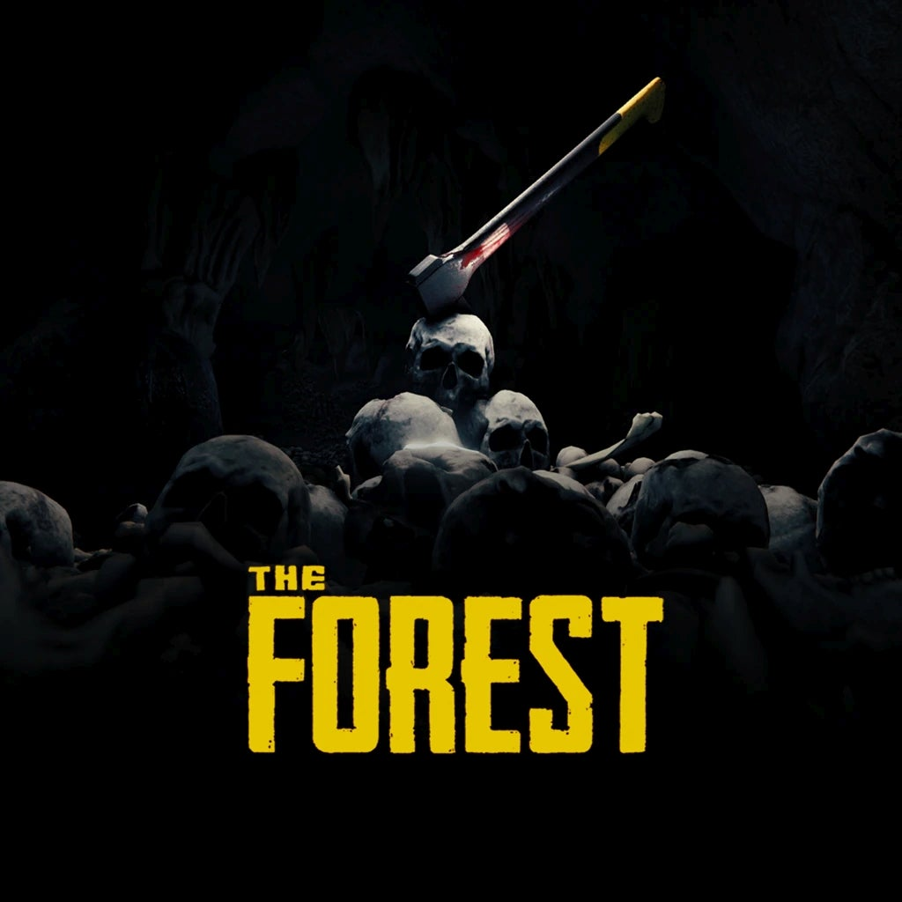

Select A Forest!
Select A Game Down Below!
Summary
"The Forest" is a survival horror video game developed and published by Endnight Games. Released in 2018, it plunges players into a mysterious forest inhabited by cannibalistic mutants. After surviving a plane crash, the player must scavenge resources, build shelter, and craft weapons to fend off threats and uncover the secrets of the island. The game features a dynamic day-night cycle, realistic survival mechanics, and a narrative-driven experience that evolves based on player choices. "The Forest" received praise for its atmospheric tension, immersive gameplay, and open-world exploration, offering a challenging and harrowing survival experience.
More Detail
"The Forest" is a survival horror game that immerses players in a harrowing and mysterious open-world environment. After surviving a plane crash, the protagonist finds themselves stranded on a remote island covered in dense forest. However, the island is not uninhabited; it's inhabited by a tribe of cannibalistic mutants who are both hostile and terrifying. The primary objective in "The Forest" is survival. Players must scavenge for resources like food, water, and materials to craft weapons, shelter, and other essential items. Building a base is crucial for protection against both the mutants and the elements. As players explore the island, they'll encounter caves, abandoned structures, and other mysterious landmarks, all while trying to uncover the secrets of the island and find a way to escape. One of the game's standout features is its dynamic day-night cycle and weather system. During the day, players can gather resources and explore relatively safely, but when night falls, the mutants become more aggressive and dangerous. Rain, fog, and other weather conditions can also impact visibility and survival, adding an extra layer of challenge to gameplay. The mutants themselves are a constant threat, ranging from small, agile scouts to larger, more powerful creatures. Combat is tense and brutal, requiring careful planning and strategy to overcome. However, players also have the option to avoid conflict altogether by using stealth and evasion tactics. "The Forest" offers both single-player and multiplayer modes, allowing players to experience the game alone or with friends. Multiplayer adds an extra dimension to gameplay, as players can collaborate to build elaborate bases, explore the island together, and fend off mutant attacks as a team. Beyond survival gameplay, "The Forest" also features a mysterious and engaging narrative. Through exploration and discovery, players gradually uncover the dark history of the island and the secrets of the mutants, leading to multiple possible endings based on player choices throughout the game. Overall, "The Forest" is a gripping and atmospheric survival horror experience that challenges players to survive against overwhelming odds while unraveling the mysteries of a hostile and unforgiving wilderness.